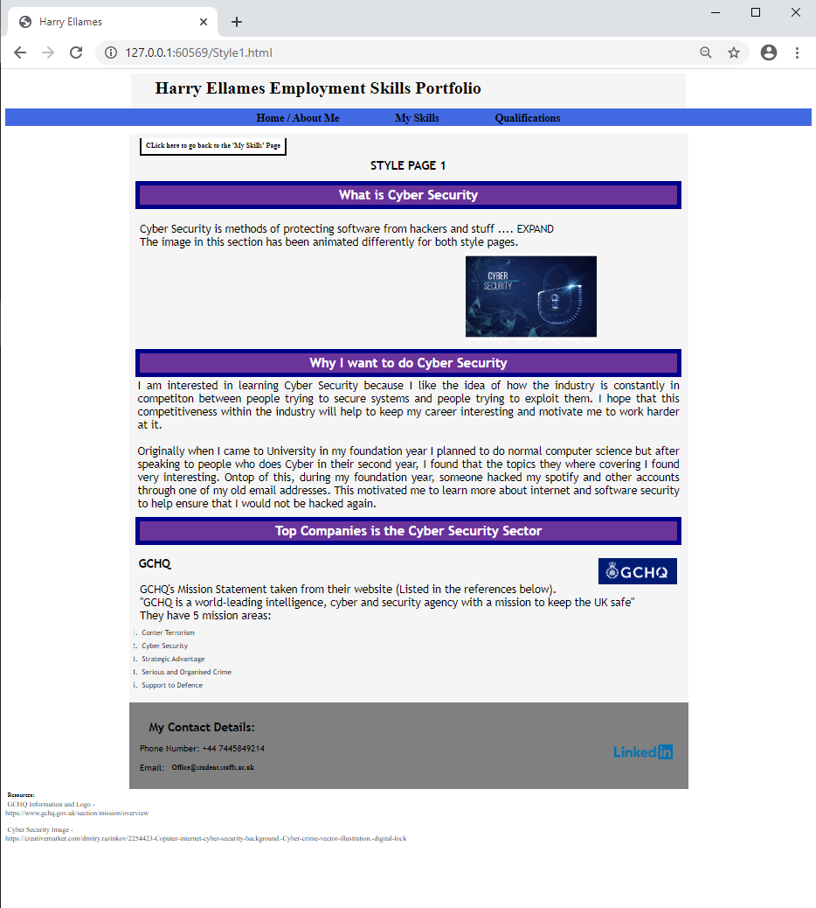
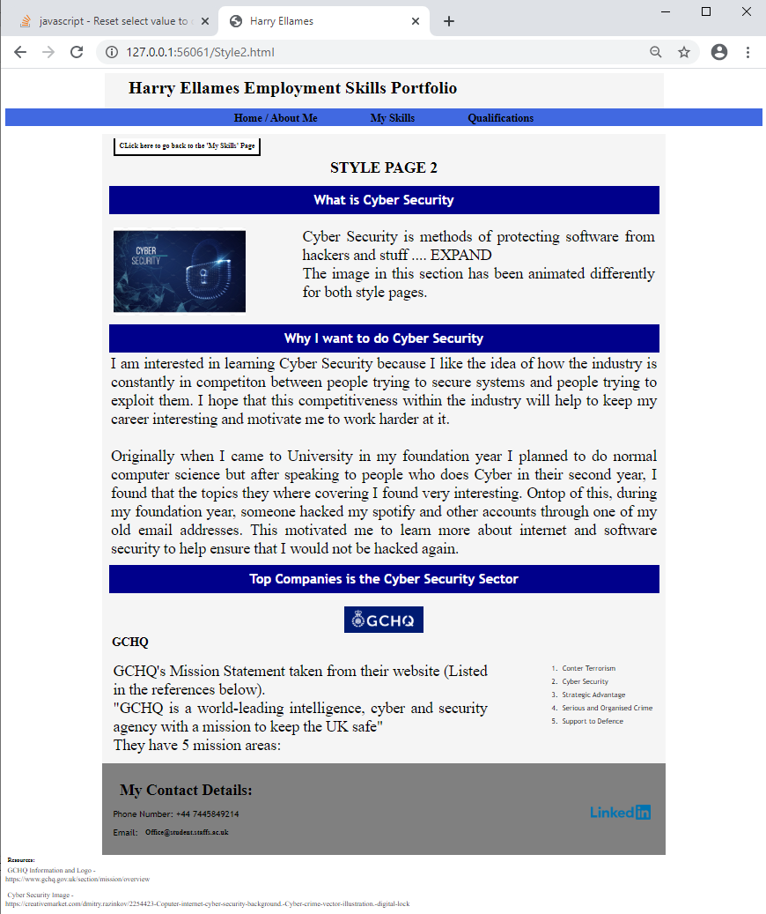
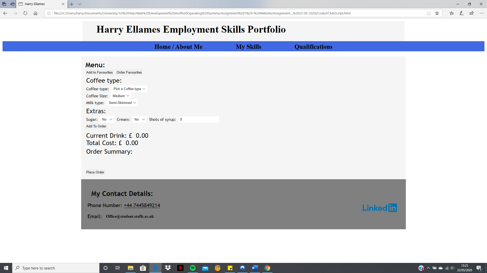

What is CSS
CSS stands for Cascading Style Sheet. It is used to change the styling of the page. This includes text font, size and colour.

Style Page 1
I have styled this page like this primarily to show animation techniques.
It is used in the h3 header type. I got it to fade colour back forth 3 times (Pink to purple) before going back its base colour (Blue). I used the @keyframes animation to do this.
I also animated the cyber security main image, again with @keyframes, to make it move left and right across the screen 4 times.
I have also implemented a transition into the GCHQ logo. If you hover your cursor over the image it will stretch horizontally.
Link to style page 1: Style Page 1

Style Page 2
I have styled this page like this to show how different CSS can effect the layout of a page. I will be using the same html page as Style Page 1 so that you can see the difference in the page layout. I have limited the width of the first paragraph and floated it to the right to allow the main cyber security image to sit on the left hand side of the page.
I also formatted the GCHQ section to put their logo in the middle of the page and move their mission areas to the right side of the page with their mission statement on the left.
I have also changed some of the fonts and font sizes.
I have also included a transition in the cyber security main image (360 degree spin) to further show animation techniques.
Link to style page 2: Style Page 2
What is ECMAScript
ECMA-Script, better known as JavaScript, is used in websites to make the page more interactive. Although ECMA-Script and Java-Script are essentially the same, ECMA-script refers to the specification where as Java-Script is the actual programming language.
Java-Script allows the developer to store variables, utilize functions and create if statements, alongside many other techniques. This helps broaden the possibilities of interactive methods used within the website.

I have created a page to demonstrate some JavaScript/ECMA-Script with a coffee ordering system (link below).
Link to ECMAScript Page: ECMAScript Page